실시간 소통
채팅·이벤트로 시청자를 붙잡고, 질문에 답하며 구매 망설임을 그 자리에서 해소합니다.
24년 커머스 영상 제작의 노하우와 방송국급 인프라를, 귀사의 라이브 한 시간에 담습니다.
모바일 라이브커머스는 실시간 소통으로 구매 전환을 만드는 채널입니다. 누가 기획하고 어떤 화면을 만드는가에 따라 매출 곡선이 달라집니다.
채팅·이벤트로 시청자를 붙잡고, 질문에 답하며 구매 망설임을 그 자리에서 해소합니다.
상품 소개 순서·혜택 소구·시연까지, 검증된 커머스 셀링 문법으로 방송을 설계합니다.
라이브 1회가 다시보기·숏폼·SNS로 확장되어, 방송 이후에도 계속 판매합니다.
기획부터 촬영·편집·송출까지 모든 팀이 한 지붕 아래에서 움직이는 원스톱 통합 시스템.
커머스 영상 제작 외길
세일즈 영상 제작 편수
제품 론칭 누적
일산 종합촬영센터 규모
전 과정을 내부 팀이 직접 수행해 퀄리티 편차 없이, 빠르게, 한 번의 커뮤니케이션으로 진행합니다.
상품 분석·컨셉·큐시트·쇼호스트
리빙 스튜디오·판넬·세트 제작
멀티캠·지미집·자체 송출 시스템
채팅 대응·이벤트·배너 운영
시청·매출 지표 분석 보고
숏폼·SNS 제작물 확장
송출 안정성, 화면 연출, 설치상품 스튜디오, 쇼호스트 매칭까지 라이브 한 시간을 팔리는 방송으로 설계합니다.
노트북 한 대로 송출하는 제작사가 아닙니다. 제대로 된 방송 송출 시스템과 장비로 홈쇼핑 본방송 수준의 안정성을 구현합니다.

11m 대형 LED WALL과 리얼타임 그래픽으로, 실제 촬영이 불가능한 배경을 라이브 무대 위에 구현합니다.
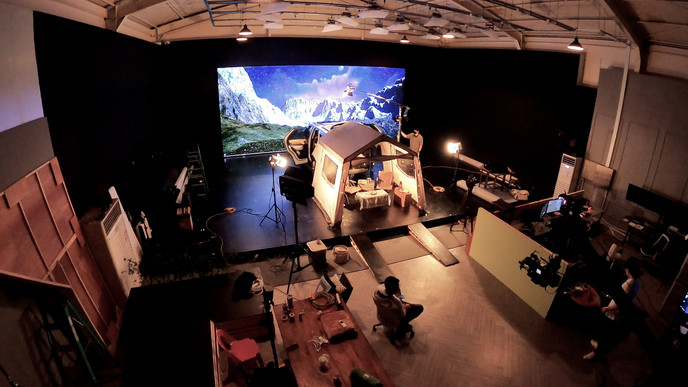
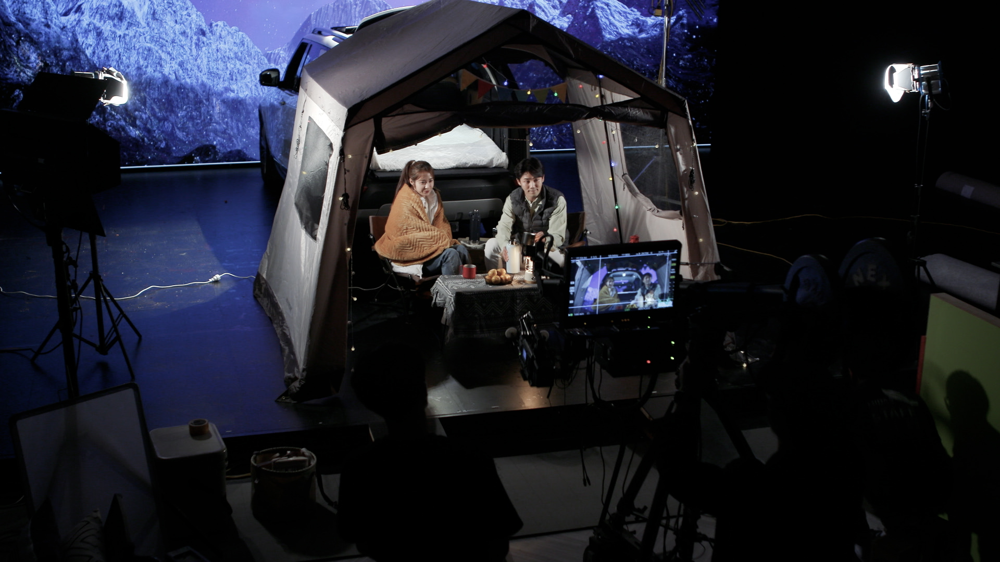
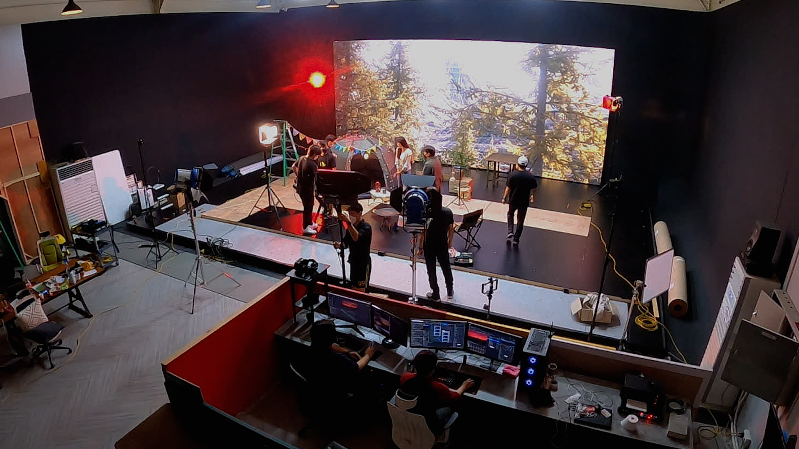
고정 캠 두세 대로 찍는 라이브와는 화면의 차원이 다릅니다. 방송국 예능·홈쇼핑에서 쓰는 지미집 크레인을, 모바일 라이브에서는 보기 드물게 자체 운용합니다.
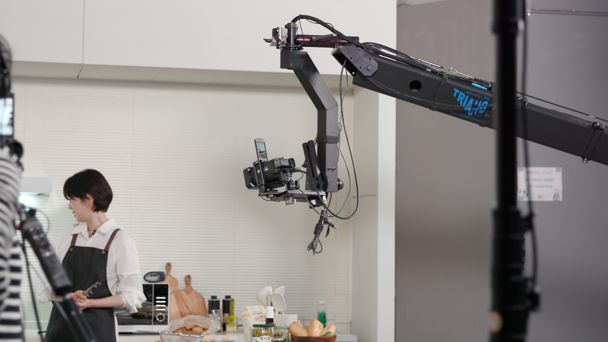
시스템에어컨·환기청정기·인덕션·주방후드·보일러 등 설치상품을 실제로 시공할 수 있는 컨셉별 리빙·주방 스튜디오를 보유하고 있습니다.
설치 → 철거 → 보관 → 재설치에 들던 비용을 크게 줄이는 차별화된 구조입니다.
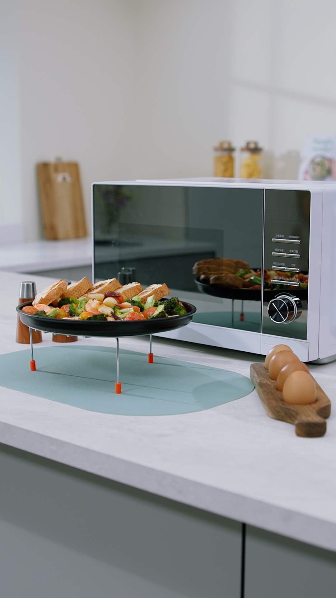
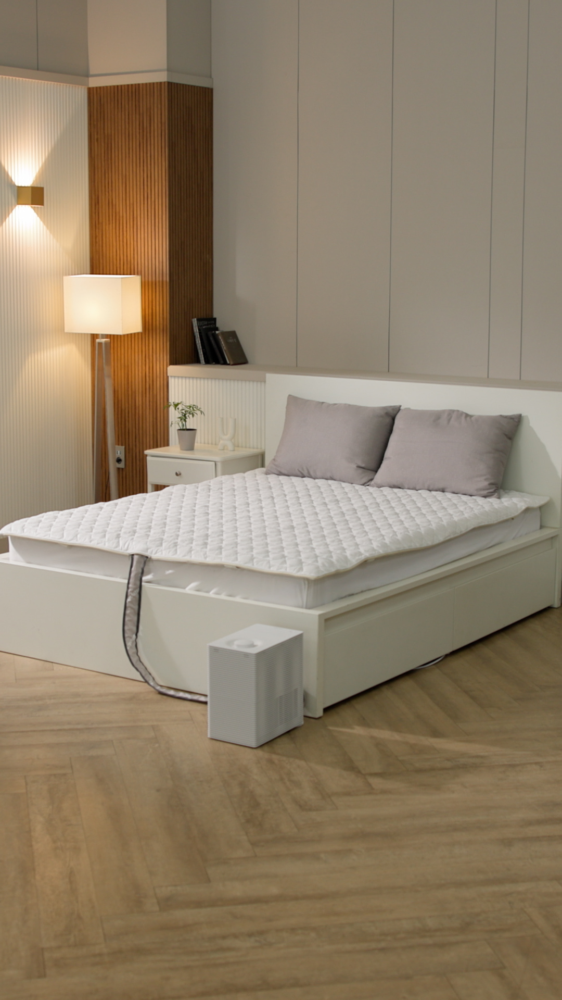
현직 방송사 쇼호스트부터 모바일 전문 쇼호스트까지 100여 명 규모의 쇼호스트 풀을 보유. 예산·컨셉·상품군에 맞춰 가장 적합한 진행자를 제안합니다.
상품군 적합도 · 방송 컨셉 · 톤 · 예산 · 일정 기준으로 후보 프로필을 제안하고, 브랜드사가 최종 선택합니다.
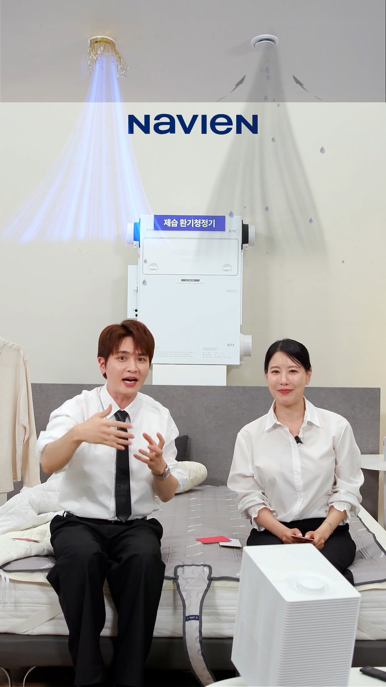
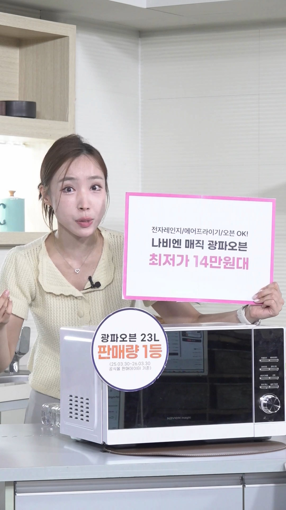
도심 방송센터와 3,000평 종합촬영센터를 함께 운용해 기획 회의부터 라이브 송출, 대형 설치상품 촬영까지 한 프로젝트 안에서 연결합니다.
단순 송출부터 기획형 판매 방송, 현장 출장 라이브, 방송 후 숏폼 재가공까지 목적에 맞는 운영 단위를 선택할 수 있습니다.
상품 시연, 혜택 고지, 쇼호스트 진행, 방송 후 숏폼 재가공까지 쇼핑라이브 흐름에 맞춰 운영합니다.
브랜드 채널, 캠페인, 신제품 공개 방송에 맞춰 멀티캠 송출과 자막·VCR 삽입을 운영합니다.
플랫폼 정책과 판매 동선에 맞춰 화면 구성, 배너, 링크 안내, 실시간 운영 범위를 조정합니다.
정해진 큐시트와 상품 구성을 안정적으로 송출하는 기본형입니다.
추천 고객플랫폼과 상품 구성이 준비된 브랜드
견적 문의판매 흐름을 함께 설계해 방송 준비 부담을 줄이는 구성입니다.
추천 고객첫 라이브, 신제품 론칭, 기획형 판매 방송
견적 문의방송 후에도 쓸 수 있는 숏폼과 광고 소재까지 함께 확보합니다.
추천 고객방송 소스를 2차 콘텐츠로 활용하려는 브랜드
견적 문의팝업스토어, 전시장, 행사장처럼 현장감이 필요한 공간에서 송출합니다.
추천 고객전시회, 팝업, 오프라인 이벤트 연계 방송
견적 문의정확한 견적은 방송 시간, 스튜디오 이용 여부, 쇼호스트·모델 섭외, 송출 채널, 디자인 범위, 숏폼 제작 여부에 따라 달라집니다.
상품 분석부터 결과 리포트까지 일정별로 필요한 의사결정을 앞당겨, 라이브 당일에는 판매와 운영에 집중합니다.
제품 정보 수령, 타겟·소구 포인트 도출, 일정 확정
방송 컨셉·세트 디자인 확정, 상품군 맞춤 쇼호스트 매칭
큐시트 초안, 예고 페이지·혜택 배너·판넬 제작
브랜드 피드백 반영, SNS·알림받기 사전 마케팅
음향·조명·동선·송출 리허설 후 본방송과 실시간 운영
매출·시청 데이터 분석, 개선 제언 포함 결과 보고서 제출
브랜드별 전담팀이 기획부터 리포트까지 책임지고, 마이다스의 전 제작 조직이 뒤를 받칩니다. 일정 변경·인력 이슈에도 내부 자원으로 즉시 대응합니다.
방송 기획·연출·총괄
큐시트·멘트·실시간 프롬프트
멀티캠 스위칭·음향·송출
세트 연출·스타일링
자막·혜택 배너·SNS 소재
상품군별 매칭·섭외
홈쇼핑 인서트 실적과 별개로, 마이다스가 직접 운영한 라이브 방송의 기록입니다.
누적 라이브 방송
신일 단일 방송 · 네이버 쇼핑라이브
네이버·유튜브·자사몰 송출
식품·가전·리빙·설치상품까지, 카테고리별로 기획·제작·송출한 대표 라이브입니다.
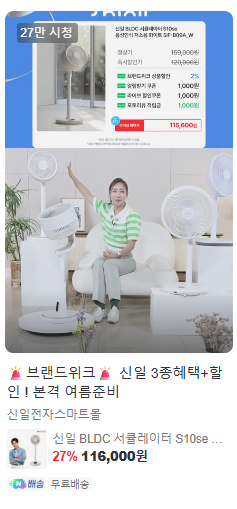
※ 비공개 방송 사례는 상품군과 목적을 알려주시면 상담 시 맞춰 공유드립니다.
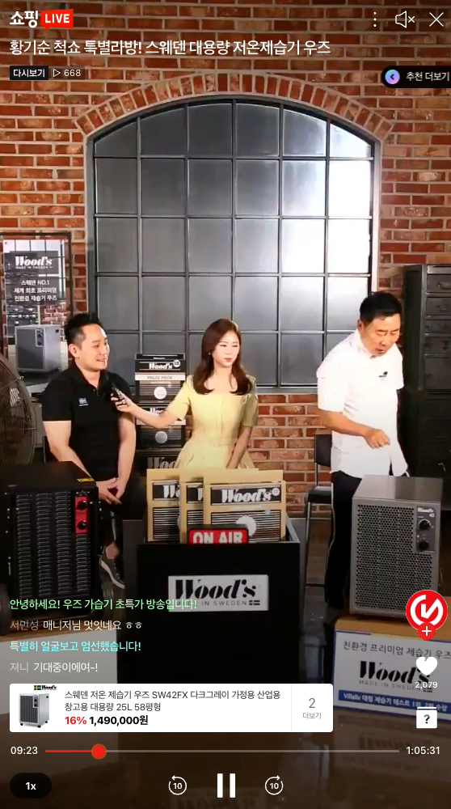
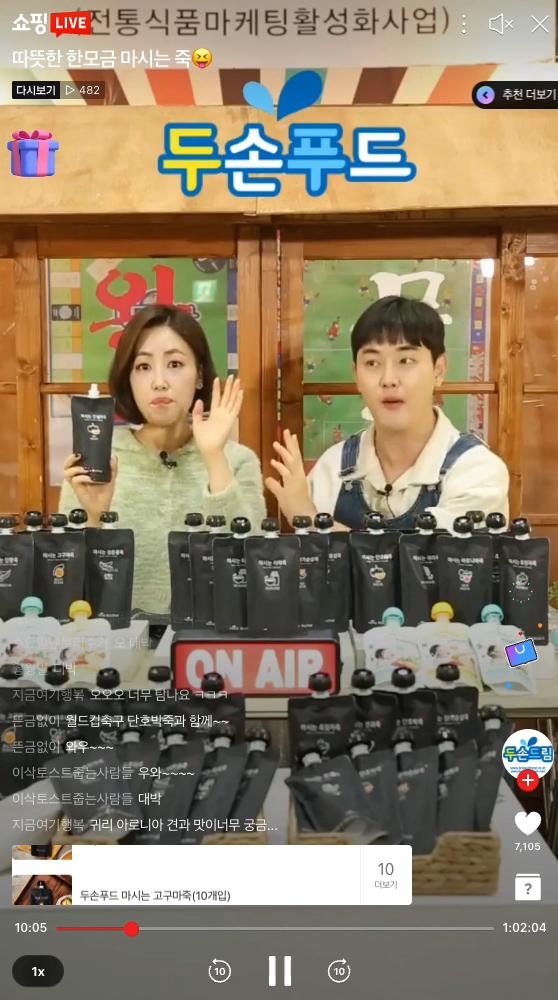
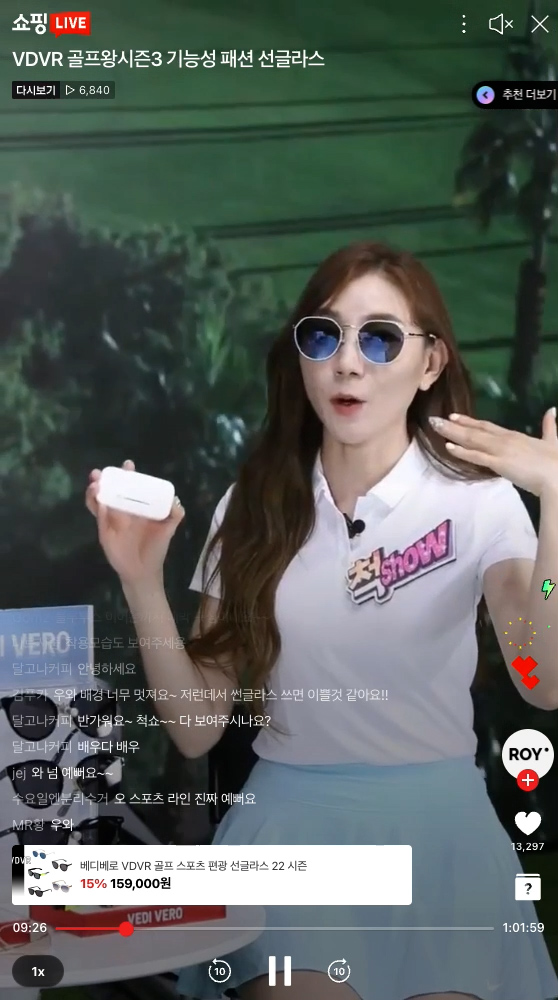
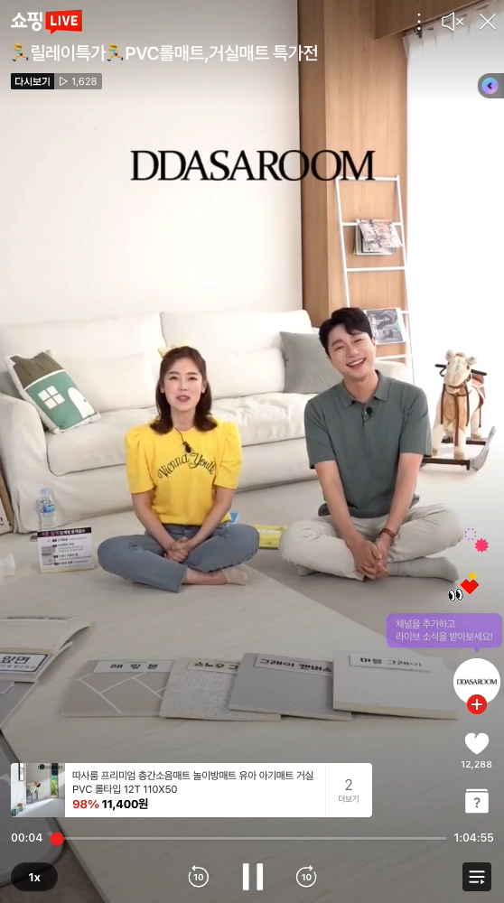
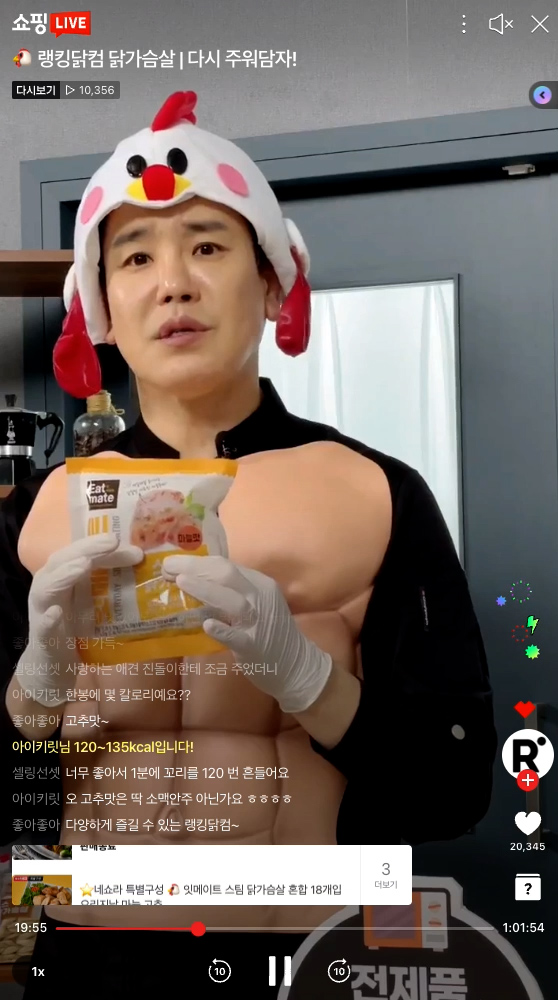
REFERENCE 사례처럼 상품 시연, 진행 흐름, 화면 구성, 송출 안정성을 실제 영상으로 확인할 수 있습니다.
라이브커머스는 영상 한 편보다 방송 한 시간의 흐름이 중요합니다. 마이다스는 큐시트, 쇼호스트 진행, 멀티캠 송출, 혜택 배너, 방송 후 숏폼 재가공까지 연결합니다.
라이브 촬영 소스를 쇼츠·릴스·SNS 광고 소재로 재가공합니다. 모바일·편집·모션팀이 내부에 있어 동일한 톤으로 빠르게 제작됩니다.
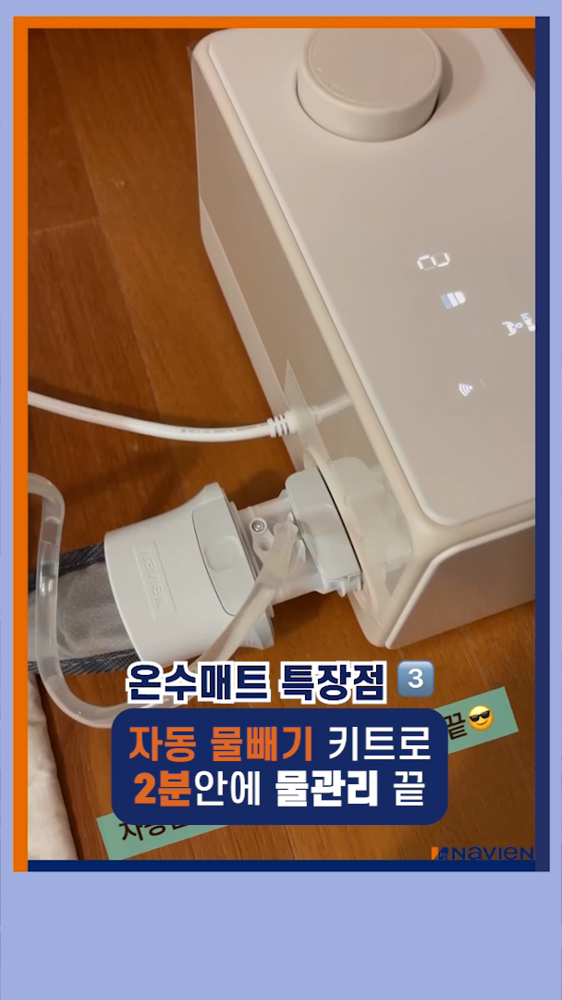
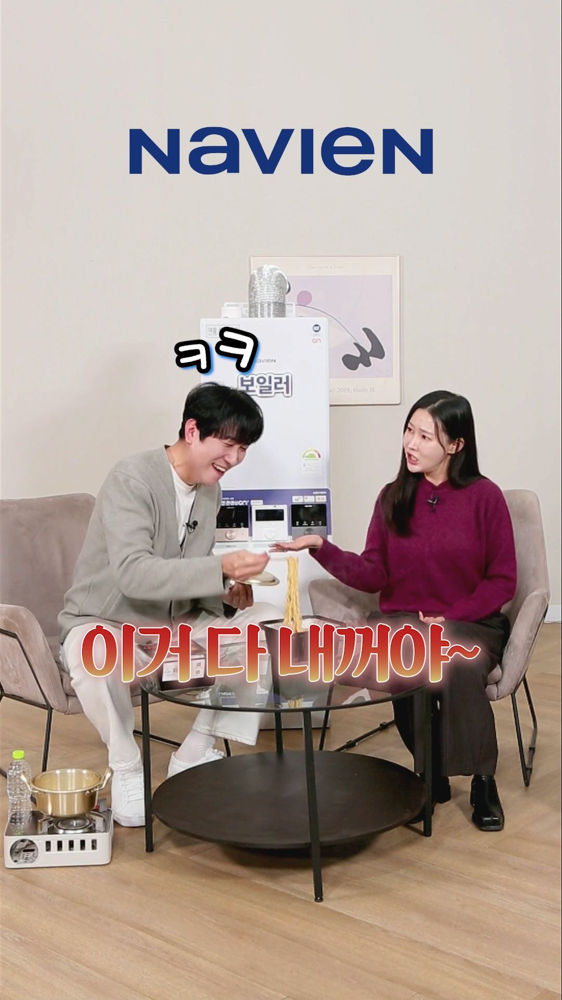
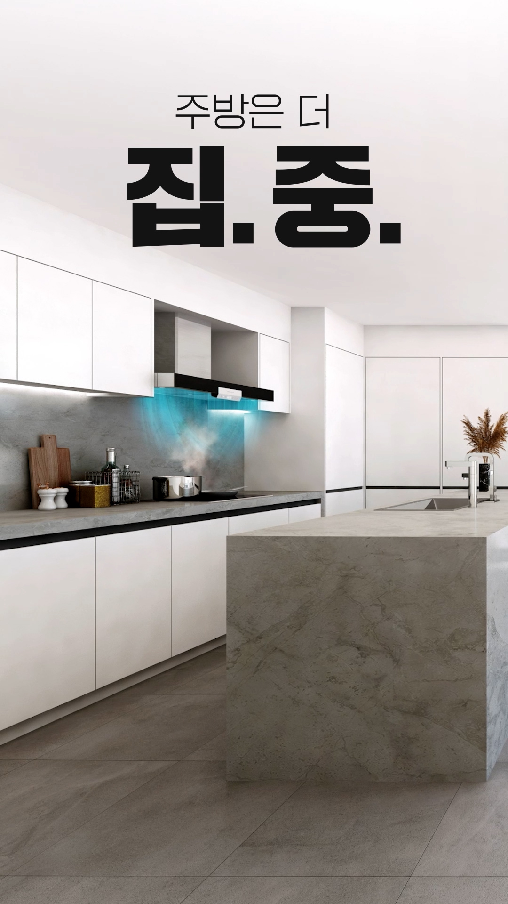
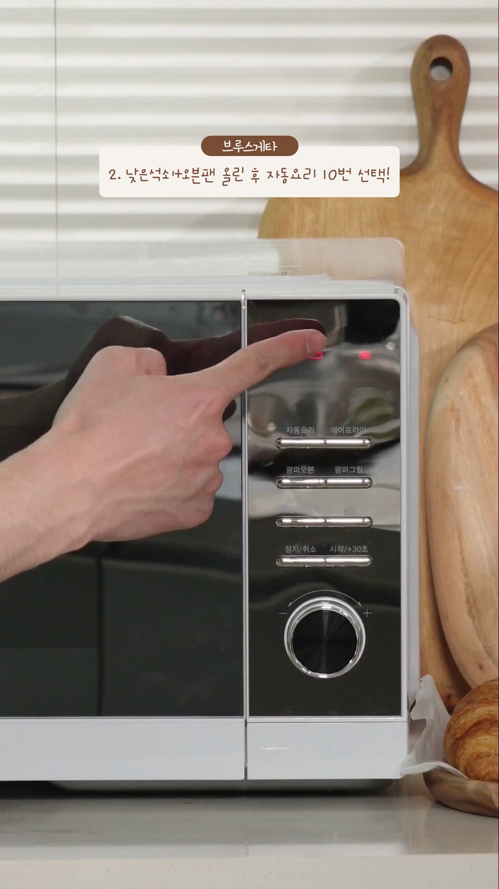
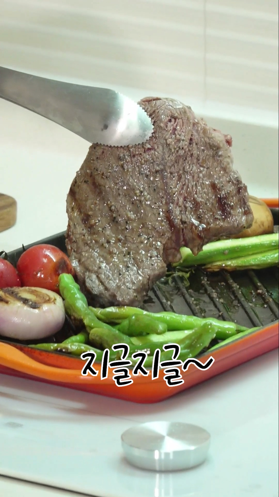
홈쇼핑 인서트 4,000여 편·런칭 3,600여 회, 24년간 쌓은 파는 화면의 노하우를 라이브 큐시트에 적용합니다.
지미집 크레인, XR·LED WALL, 전문 송출 시스템으로 방송국급 화면을 만듭니다.
시공 가능한 컨셉 스튜디오와 다회차 무철거 유지로 재설치·세트·보관 비용을 줄입니다.
라이브커머스는 홈쇼핑 인서트, 브랜드 홍보, 숏폼 제작과 함께 설계될 때 더 강하게 작동합니다.
상품과 일정만 알려주세요. 방송은 마이다스가 만들어드립니다. 라이브커머스 문의는 02-2675-9767 또는 sdmidas@gmail.com 으로도 가능합니다.